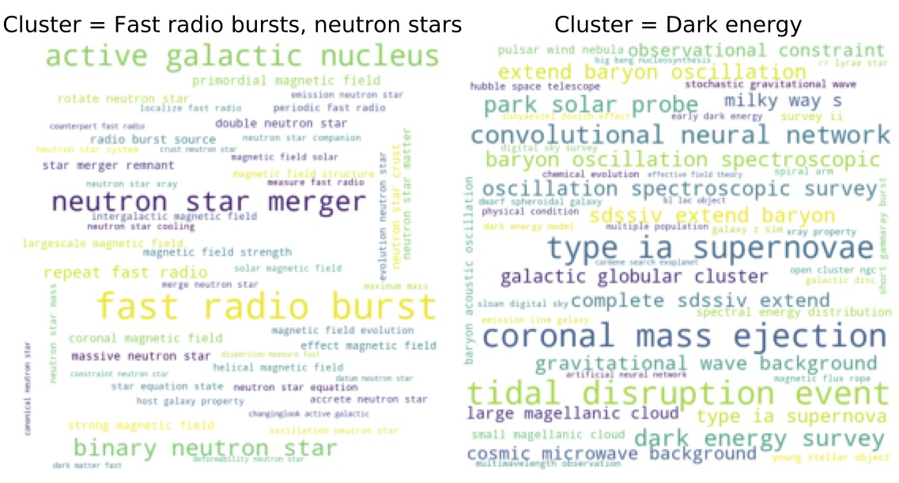
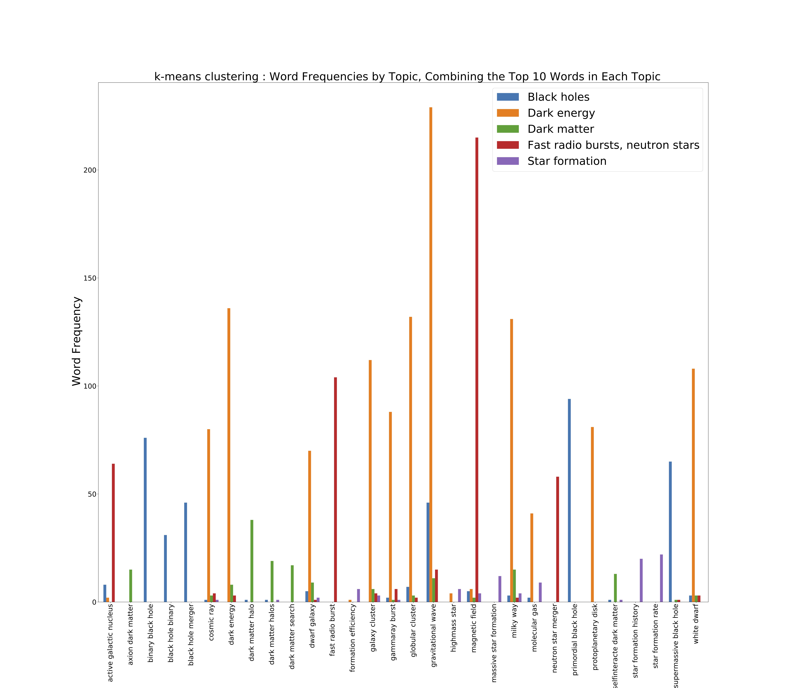
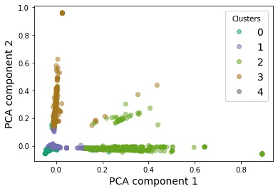

About
This project is geared towards young researchers such as undergraduates motivated to pursue graduate school. Undergraduate research experience is a major factor in graduate admissions. However, as a beginner, it is extremely challenging for an undergrad to identify the broad research topics and the fastest growing areas in any field he/she is interested in. Moreover, simply going through publication databases isn't a viable solution: every year thousands of papers are published in every research area in physics!
This project attempts to answer some of these problems. I have identified and compared the buzzwords of two different years which gives us an indication of the rising trends in physics. Using topic modelling, I have identified broad research topics as well as sub-topics contained in them. An interested reader can not only get a clear view of the research landscape in any broad are in physics but also find out some of the specific questions that belong to any field.
Visit my GitHub repository to understand the machine learning techniques implemented in this project.
Rising Trends in Physics
Using the arXiv database for physics, I have compared the buzzwords in all areas of physics between two different years, 2010 (on the left) and 2020 (on the right). To create this comparison, I analyzed ~7400 publication titles from 2010 and ~17,000 from 2020. We can see some emerging trends such as 'neural networks' and 'machine learning' as well as some topics that have stayed both stable and prolific over the years such as 'optics'. This is an indication that machine learning is gaining popularity in physics and is a very useful skill to possess. Notice that COVID was also talked about frequently by physicists in 2020.


In 2010, the top 10 most used words were:
'dynamic',
'quantum',
'network',
'optical',
'plasma',
'theory',
'state',
'simulation',
'electron',
'particle'
In 2020, the top 10 most used words are:
'dynamic',
'quantum',
'network',
'optical',
'simulation',
'flow',
'COVID',
'state',
'Modeling',
'Neural Network'
Most popular fields in Physics
A bar chart provided below compares the most active fields within physics between 2010 and 2020. The numbers on the X-axis are the publication count. Comparing the 2010 and 2020 research trends, we see that the field of 'Optics' stayed the most active in a decade. In contrast, 'Applied Physics' has become more active recently whereas 'Physics and Society' has become less popular since 2010.


Rising trends: a closer look
We can also look at the change in popularity of some key words/phrases over the years. Plotted below are the frequency vs. year (on the left in blue) and percentage increase from the previous year vs. year (on the right in red) of two phrases, such as 'Neural Network' (top panel) and 'Black Hole' (bottom panel) for example. Neural networks has seen a steady increase in popularity over the years, especially in the year 2017. Black holes, on the other hand, gained popularity between 2015 and 2017 which could be due to the discovery of binary black hole mergers by LIGO in 2015.
Topic modeling
For topic identification, I have implemented unsupervised machine learning algorithms such as k-means clustering and the Latent Dirichlet Allocation or LDA. In k-means clustering, each document is viewed as a multi-dimensional vector of the matrix. Two documents are similar to one another if their corresponding vectors are close to one another or, in other words, if the difference of their vectors is small in length. We can use this common clustering method to group our documents together to find topics of research in Astophysics (astro-ph).
In LDA, each word in a document is assigned a topic. Initially, this assignment is done randomly. To improve upon the assignment of topics to each word, we look at the probability of a word, w, belonging to a particular topic, t. This is calculated by making a subsample of all documents that are classified as a particular topic t and the number of documents in that subsample that contains the word w. The LDA then goes through each document in the corpus and calculates the probability that a topic t is contained in a document d. These two probabilities assign a new probability to every word in the document of belonging to a topic. Repeating this process many times gives us an equilibrium value of the probabilities associated with each word and document.
Below is a comparison of the sub-topics I identified using k-means clustering and LDA. I used 13,600 publication titles from the Astrophysics submissions of the year 2020.
| k-means clustering | LDA |
|---|---|
| Fast radio bursts, neutron stars | Fast radio bursts, compact objects |
| Dark energy | Supermassive black holes |
| Black holes | Black holes and gravitational waves |
| Dark matter | Primordial black holes |
| Star formation | Dark energy |
Visualizations
Let's look at a few visualizations from the clustering algorithms to get more insights from the data.
Word Cloud
First let's take a look at the most frequent words in a couple of the clusters through wordclouds. This will help us label the 5 clusters.
The two wordclouds above belong to the clusters from the k-means algorithm. Similar wordclouds can be made for all the other clusters for both algorithms. More details have been provided in the Python notebook in GitHub.
Cluster size
We see that in the k-means approach, Dark energy is the largest cluster. This seems to be consistent with my personal experience of going through the arXiv database in the past few years. On the other hand, the LDA returns Primordial black holes as the largest cluster which seems a bit unintuitive. This perhaps points to the need for better word vectorization in the LDA approach. Since the cluster sizes of the k-means approach are reasonable, we will look only at the k-means approach below.
Word Frequencies
Next, we can look at the number of occurences in each cluster of some of the most frequent words in the corpus. This visualization could suggest some additional stop words that we might want to add (and then reprocess the resulting new bag of words matrix) to make our clustering better.
For example, dark matter 'halo' and 'halos' appear to be two different words. This indicates we must go back to the lemmatization step and replace all words 'halos' with 'halo'.
Low-dimensional representation
We can use PCA to project the high-dimensional vector representation of our text corpus into a lower-dimensional space. This could give us an indication of the separation or overlapping between the clusters.
We see that some clusters, eg. Cluster 2 (green, 'Black Holes') and 3 (brown, 'Dark Matter') are reasonably well-defined: most of the documents belonging to these clusters lie along one axis. There is some overlap which is to be expected. There is some mixing in the other clusters, e.g. Clusters 1 (purple, 'Dark Energy') and 2 (green), possibly because of the limitation of the projection down into a two-dimensional space.